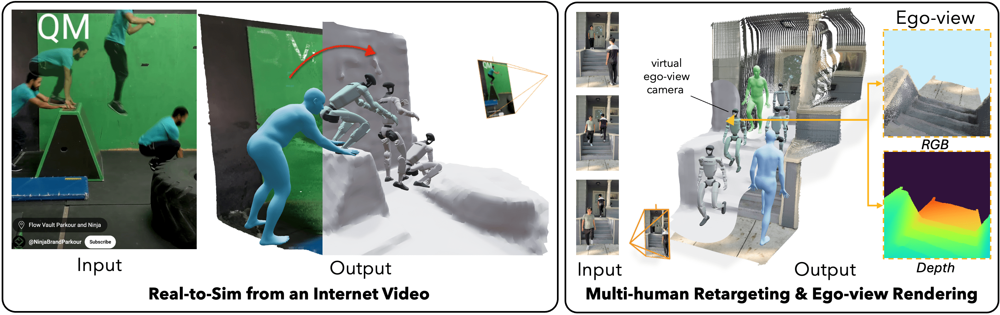

RISE

Using Non-Expert Data to Robustify Imitation
Learning via Offline Reinforcement Learning
RISE: Robust Imitation by Stiching from Experts demonstrates the following benefits.
Abstract.
Imitation learning has proven highly effective for training robots to
perform complex tasks from expert human demonstrations. However, it remains
limited by reliance on high-quality, task-specific data, restricting adaptability to
the diverse range of real-world object configurations and scenarios. In contrast,
non-expert data—such as play data, suboptimal demonstrations, or partial task
completions—can offer broader coverage and lower collection costs, but conven-
tional imitation learning approaches fail to utilize this data effectively. To address
these challenges, we show that offline reinforcement learning can be used as a
tool to harness non-expert data to enhance the performance of imitation learning
policies. We show that while standard offline RL approaches can be ineffective
at actually leveraging non-expert data under sparse coverage, simple algorithmic
modifications can allow the utilization of this data without significant additional
assumptions. Our approach shows that broadening the support of the policy dis-
tribution in offline RL can allow offline RL augmented imitation algorithms to
solve tasks robustly, under sparse coverage. In manipulation tasks, these innova-
tions significantly increase the range of states where learned policies are success-
ful when non-expert data is incorporated. Moreover, we show that these methods
are able to leverage all collected data, including partial or suboptimal demonstra-
tions, to bolster task-directed policy performance, underscoring the importance of
methods for using non-expert data for scalable and robust robot learning.
We introduce Robust Imitation Learning by Stitching from Experts,
or RISE 🌅.
Real-world Demo.
Tipping: Yada yada.
Cloth: Yada yada.
Approach.
Figures explaining.
Test: A caption.
{kind=link}
Figure 1: Another.
{kind=link}
Figure 2: Another.
2. Lipschitz.
{kind=link}
Figure 3: Another.
Acknowledgements.
We thank .
BibTeX
Insert bibtex here.
}